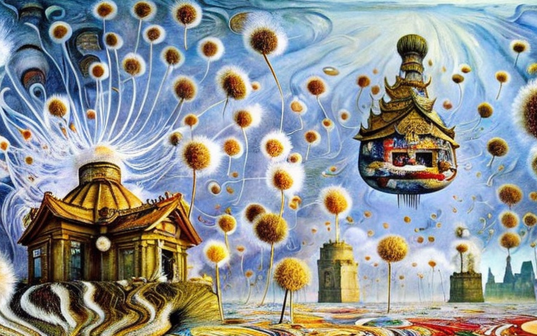
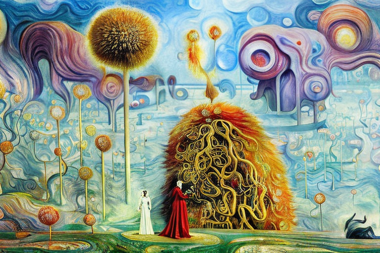
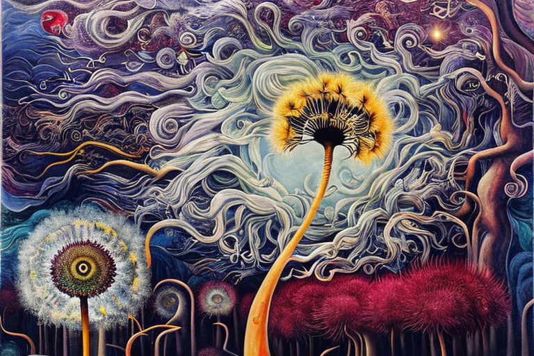
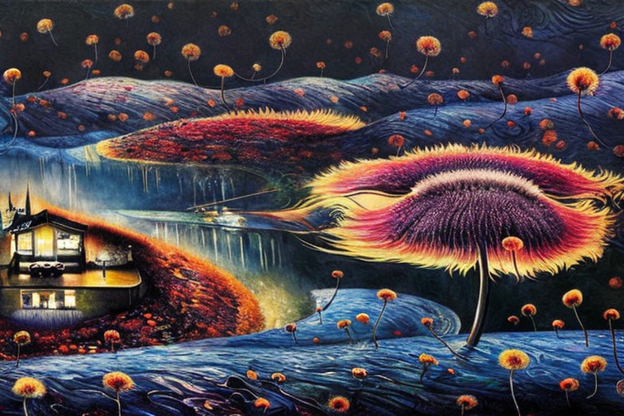

Ο ναός της πικραλίδας και τα μυστικά του
Αρχική Σελίδα
Πίνακας Περιεχομένων
Ο απόκρυφος ναός

Στην καρδιά της ζούγκλας, υπήρχε ένας ναός μοναδικός. Ήταν χτισμένος απο πικραλίδες, με το λευκό χνούδι τους να λάμπει απο τις προσπίπτουσες ακτίνες του ηλίου. Ο ναός είχε σφαιρικό σχήμα και μπορούσε να πετάξει στον αέρα και στα σύννεφα με κάθε νέα περιστροφή της σελήνης.
Λέγεται ότι ο ναός είχε μεγάλη δύναμη και σοφία, αλλά μόνο οι πιο γενναίοι και άξιοι επιτρέποταν να εισέλθουν. Πολλοί είχαν προσπαθήσει να βρουν τον ναό, αλλά ήταν κρυμμένος βαθιά στη ζούγκλα προστατευμένος από μυστηριώδεις δυνάμεις.
Μια μέρα, ένας περιπετειώδης νεαρός ονόματι Όντις ξεκίνησε να ταξιδεύει για να ανακαλύψει τον ναό. Είχε ακούσει ιστορίες για τη δύναμή του και ήθελε να αποκαλύψει τα μυστικά του. Ταξίδεψε μέσα από επικίνδυνους βάλτους και ανέβηκε σε απόκρημνα βουνά, αντιμετωπίζοντας αμέτρητες προκλήσεις στην πορεία.
Ο Όντις ήταν αποφασισμένος και απτόητος. Προχωρούσε και μετά από πολλούς μήνες έφτασε τελικά στην καρδιά της ζούγκλας. Εκεί, στο βάθος, είδε το ναό, το άσπρο χνούδι του να λάμπει στο φως του φεγγαριού.
Ο Όντις πλησίασε το ναό με προσοχή, αλλά καθώς πλησίαζε, ο ναός άρχισε να πετάει μακριά. Ο Όντις ήταν αποφασισμένος να μην αφήσει αυτή την ευκαιρία να χαθεί, και κυνήγησε το ναό απο πίσω, τρέχοντας μέσα στη ζούγκλα όσο πιο γρήγορα μπορούσε.
Τελικά, ο Όντις έφτασε στο ναό και ανέβηκε στο κτίριο. Μέσα, βρήκε ένα δωμάτιο γεμάτο με αρχαία κείμενα και αντικείμενα. Πέρασε πολλές μέρες μελετώντας και μαθαίνοντας τη σοφία του ναού, και όταν βγήκε, ήταν ένας καινούργιος άνθρωπος.
Επέστρεψε στο χωριό του και μοιράστηκε τη σοφία που είχε μάθει, διδάσκοντας στους ανθρώπους πώς να ζουν σε αρμονία με τη φύση. Και ο ναός, ακόμα κρυμμένος βαθιά στη ζούγκλα, συνέχιζε να πετάει μακριά κάθε άλλο κύκλο φεγγαριού, με μυστικά γνωστά μόνο σε λίγους εκλεκτούς.
Η παγίδα του ναού

Καθώς η ιστορία του Όντις μαθεύτηκε, πολλοί άλλοι εμπνεύστηκαν να αναζητήσουν τον ναό της πικραλίδας, ανυπόμονοι να ξεκλειδώσουν και αυτοί τα μυστικά του. Σύντομα όμως έμαθαν τι κίνδυνοι ελλόχευαν μέσα στο ναό.
Γιατί ο ναός δεν ήταν απλώς ένας τόπος σοφίας, αλλά μια παγίδα για τους απρόσεκτους. Το λευκό χνούδι του, που φαινόταν τόσο ελκυστικό από μακριά, ήταν στην πραγματικότητα ένα δίκτυο από λεπτές ίνες που παγίδευε τους επισκέπτες και τους ακινητοποιούσε.
Οι πολλοί σπόροι του ναού, μικροί και φαινομενικά ακίνδυνοι, ήταν στην πραγματικότητα αιχμηροί και αγκαθωτοί, σχεδιασμένοι να γραπώνουν και να παγιδεύουν τους ανυποψίαστους. Και το περιστέμιο, το πιο εσωτερικό στρώμα του ναού, ήταν ένας λαβύρινθος από αγκάθια και αιχμηρές απολήξες που παγίδευαν όσους αποτολμούσαν βαθιά εξερεύνηση.
Αλλά οι παγίδες του ναού δεν είχαν σκοπό να βλάψουν, μόνο να δοκιμάσουν. Όσοι μπορούσαν να περιηγηθούν στις άμυνες του ναού και να πατήσουν στο εσωτερικό του ιερού θεωρούνταν άξιοι και είχαν πρόσβαση στη σοφία του ναού.
Και έτσι, πολλοί γενναίοι νέοι ξεκίνησαν να βρουν τον ναό, καθείς αποφασισμένος να ξεπεράσει τις παγίδες του και να φτάσει στο ιερό. Αλλά το ταξίδι δεν ήταν εύκολο, και πολλοί πιάστηκαν και ακινητοποιήθηκαν από τις ίνες, τους σπόρους και τα περιστέμια του ναού.
Αλλά όσοι επέμειναν, να ξεπεράσουν τους κινδύνους του ναού και να αντιμετωπίσουν τις παγίδες του, είχαν πρόσβαση στα μυστικά του. Βγήκαν από το ναό αλλαγμένοι, με μια βαθύτερη κατανόηση του κόσμου και της θέσης τους σε αυτόν.
Ο ναός, ακόμα κρυμμένος βαθιά στη ζούγκλα, συνέχιζε να πετάει μακριά κάθε νέο φεγγάρι. Αλλά για όσους μπόρεσαν να ξεκλειδώσουν τη σοφία του, είχαν ανακαλύψει την αλήθεια της αινιγματικής φύσης του ναού, και έτσι, ανακάλυψαν την αλήθεια του εαυτού τους.
Η μυστηριώδης φύση
Καθώς ο ναός συνέχιζε να πετά μακριά με κάθε νέο φεγγάρι, πολλοί άρχισαν να αναρωτιούνται πώς ήταν σε θέση να αιωρείται και να ταξιδεύει στον αέρα. Άλλοι είπαν ότι ήταν μαγεία, άλλοι είπαν ότι ήταν έργο των θεών. Όμως η αλήθεια ήταν πιο περίπλοκη και μυστηριώδης.
Γιατί ο ναός δεν ήταν απλώς ένα κτίριο, αλλά ένας ζωντανός οργανισμός, με τον δικό του παλμό ζωής. Το περιστέμιό του, το πιο εσώτερο στρώμα, δεν ήταν απλώς ένας λαβύρινθος από αγκάθια και αιχμές, αλλά και ένα δίκτυο νεύρων και ενεργειακών καναλιών που επέτρεπαν στον ναό να ανταποκρίνεται στον κόσμο γύρω του.
Όταν οι άνεμοι άρχισαν να φυσούν, ο ναός χρησιμοποιούσε το περιστέμιό του για να περιηγηθεί μαζί με την κατεύθυνση και δύναμη του ανέμου. Στη συνέχεια προσάρμοζε το σχήμα και τη θέση του για να αξιοποιήσει την ενέργεια του ανέμου, σηκώνοντας τον εαυτό του στον αέρα και ταξιδεύοντας στα ρεύματα σαν πτηνό.
Καθώς ο ναός πετούσε, περνούσε μέσα από τα σύννεφα, αποφεύγοντας τα εμπόδια και αναζητώντας τους ισχυρότερους ανέμους. Και καθώς αιωρούταν, το περιστέμιό του κρατούσε την ισορροπία της δομής, διατηρώντας το σταθερό και ακούνητο στο αέρινο ταξίδι του.
Πολλοί παρακολουθούσαν με δέος καθώς ο ναός πετούσε από πάνω, με το λευκό χνούδι του να λάμπει στο φως του φεγγαριού. Θαύμασαν την ομορφιά και τη χάρη του και αναρωτήθηκαν για τα μυστικά που κρατούσε.
Αλλά για όσους είχαν αποτολμήσει την παρουσία εντός του ναού, το θέαμα είχε ένα βαθύτερο νόημα. Γνώριζαν ότι ο ναός δεν ήταν απλώς μια κατασκευή, αλλά ένα ζωντανό ον, με τη δική του συνείδηση. Και ήξεραν ότι καθώς ο ναός πετούσε στον αέρα, δεν ήταν απλώς ταξίδι, αλλά και αναζήτηση, αναζήτηση για κάτι που μόνο αυτός γνώριζε.
Και έτσι, ο ναός συνέχισε να πετάει μακριά και καθώς χάθηκε στα σύννεφα, πολλοί αναρωτήθηκαν πού κατευθυνόταν και τι έψαχνε. Αλλά μόνο ο ναός ήξερε την απάντηση και έκρυβε καλά τα μυστικά του, πετώντας στον αέρα σε έναν χαριτωμένο, αινιγματικό χορό αιώρησης.
Η σπορά της γνώσης

Καθώς ο ναός συνέχιζε να πετάει στον αέρα, πολλοί άρχισαν να αναρωτιούνται για τον σκοπό του ταξιδιού του. Κάποιοι πίστευαν ότι έψαχνε για κάτι, άλλοι νόμιζαν ότι απλώς εξερευνούσε τον κόσμο. Αλλά η αλήθεια ήταν πολύ βαθύτερη.
Γιατί ο ναός δεν ήταν απλώς μια κατασκευή, αλλά ένας σπόρος, ένα ζωντανό ον που σχεδιάστηκε για να διαδώσει τη σοφία του σε άλλους κόσμους. Το λευκό του χνούδι δεν ήταν απλώς ένα διακοσμητικό χαρακτηριστικό, αλλά ένας μηχανισμός εξάπλωσης των σπόρων του.
Καθώς ο ναός πετούσε, άφηνε τους σπόρους του, μικροσκοπικούς και φαινομενικά ασήμαντους, στον άνεμο. Οι σπόροι στη συνέχεια καθοδηγούνταν απʼτα ρεύματα, φυσώντας τα μακριά και διασπέρνοντας τα πάντοθεν του σύμπαντος.
Και καθώς ταξίδευαν, έρχονταν να ξεκουραστούν σε άλλους πλανήτες και ιπτάμενα αστρικά αντικείμενα, ριζώνοντας και μεγαλώνοντας σε νέους ναούς, καθένας από τους οποίους προερχόμενος του αρχικού.
Οι νέοι ναοί συνέχιζαν τότε το ταξίδι, διαδίδοντας τη σοφία και τη γνώση τους σε ακόμη περισσότερους κόσμους. Και με αυτόν τον τρόπο, η σοφία του ναού μοιραζόταν σε όλο το σύμπαν, φτάνοντας σε κάθε γωνιά του σύμπαντος.
Καθώς ο ναός πετούσε, δεν έψαχνε απλώς αορίστως, αλλά επίσης μοιραζόταν τη γνώση του, διαδίδοντας τη σοφία του σε όλους όσους ήταν πρόθυμοι να την λάβουν. Και με αυτόν τον τρόπο, ο ναός εκπλήρωνε τον σκοπό του, διαδίδοντας τη γνώση του στα πέρατα του σύμπαντος.
Η πληθυσμιακή άνθιση

Καθώς ο ναός συνέχιζε να πετάει στον αέρα, η σοφία και η γνώση του εξαπλώνονταν στα πέρατα του σύμπαντος, ο πολλαπλασιασμός του ναού της πικραλίδας γινόταν όλο και πιο εμφανής. Κάθε πλανήτης, φαινόταν, ήταν ένα γόνιμο έδαφος για την χνουδωτή δομή και δεν άργησε να βρεθεί ο ναός σε αμέτρητους πλανὴτες.
Οι ναοί που φύτρωσαν από τους σπόρους που διέσπειρε ο αρχικός ναός δεν ήταν ακριβή αντίγραφα, αλλά μοναδικές κατασκευές που αντανακλούσαν το περιβάλλον στο οποίο φύτρωσαν. Μερικοί ήταν ογκώδεις και μεγαλειώδεις, ενώ άλλοι ήταν μικροί και οικείοι. Μερικοί χαρακτηρίζοταν απο περίτεχνα περιστέμια, ενώ άλλοι απο πιο απλή αρχιτεκτονική.
Κάποιοι πλανήτες, με το σκληρό και αδυσώπητο περιβάλλον τους, ήταν μια πρόκληση για την επιβιώση του ναού. Όμως ο ναός δεν πτοήθηκε. Το περιστέμιό του, το πιο εσωτερικό στρώμα, σχεδιάστηκε για να προσαρμόζεται σε κάθε συνθήκη, βρίσκοντας έναν τρόπο να επιβιώσει και να ευδοκιμήσει ακόμα και στα πιο εχθρικά περιβάλλοντα.
Άλλοι πλανήτες, με τα πλούσια και γόνιμα εδάφη τους, ήταν το τέλειο έδαφος για την άνθηση του ναού. Και καθώς μεγάλωνε, θα απελευθέρωνε περισσότερους σπόρους, διαδίδοντας τη σοφία και τη γνώση του σε ακόμα περισσότερους κόσμους.
Όμως, παρά τις διαφορές τους, όλοι οι ναοί είχαν ένα κοινό χαρακτηριστικό, ήταν όλοι παραλλαγές της σοφίας του αρχικού ναού.
Καθώς οι ναοί πολλαπλασιάζονταν σε όλο το σύμπαν, έγιναν πηγή θαύματος και έμπνευσης για όλους όσους τους συνάντησαν. Οι άνθρωποι ταξίδευαν από μακριά και μακριά για να επισκεφτούν τους ναούς, να θαυμάσουν την ομορφιά τους και να ξεκλειδώσουν τα μυστικά τους.
Πολλοί από αυτούς που τολμούσαν μέσα στους ναούς επέστρεφαν αλλαγμένοι, έχοντας ξεκλειδώσει κάποιο μικρό κομμάτι της σοφίας του ναού. Στη συνέχεια θα επέστρεφαν στους δικούς τους κόσμους και μοιράζονταν τη γνώση με άλλους.
Και με αυτόν τον τρόπο, η σοφία του ναού εδραιώθηκε στον ίδιο τον ιστό του σύμπαντος, διαμορφώνοντας τις σκέψεις και τις πράξεις των επόμενων γενεών.
Ο πολλαπλασιασμός του ναού της πικραλίδας δεν ήταν απλώς ένα φυσικό φαινόμενο, ήταν και πνευματικό. Οι ναοί χρησίμευαν ως υπενθύμιση της διασύνδεσης όλων των ὸντων και της σημασίας της ανταλλαγής γνώσης και σοφίας.
Καθώς ο ναός συνέχιζε να πετάει μακριά με κάθε νέο φεγγάρι, διέδιδε επίσης τη σοφία του στο σύμπαν. Εκπλήρωνε τον απώτερο σκοπό του, να φωτίσει και να ανυψώσει όλους όσους το αντίκρυσαν.